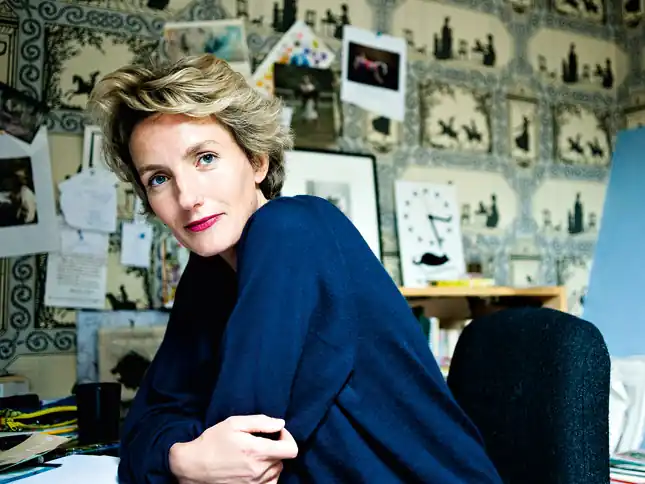
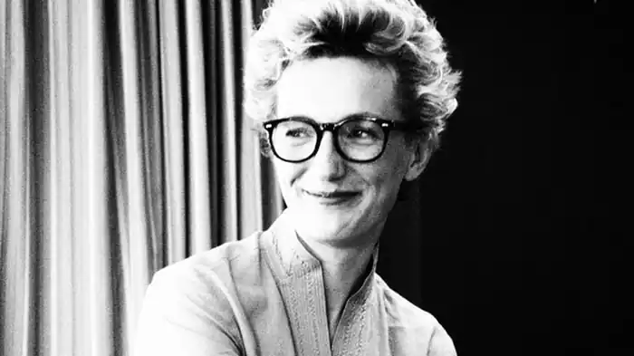

9 грудня 1970 року в французькому місті Булонь-Беланкур народилася Анна Гавальда — сучасна французька письменниця. Цікаво, що ще у її прабабусі прізвище звучала як "Фульда", але змінилася під впливом вимови французьких чиновників. З самого дитинства Анна була страшною вигадницею, що не заважало їй добре вчитися в школі. Найбільше вона обожнювала писати твори, і майже всі її роботи вчителька зачитувала класу, як приклад. Анні виповнилося чотирнадцять років, коли її батьки розлучилися, і дівчинці довелося жити і вчитися в пансіоні.
Освіту Анна Гавальда продовжила отримувати в Сорбонні і в студентські роки чимало попрацювала — офіціанткою, касиркою і журналісткою. Працювати їй доводилося для того, щоб кожен день у неї був сніданок і, бажано, вечеря, і дівчина зовсім не думала тоді, що отриманий досвід та враження знадобляться їй пізніше для написання книг. Брала вона участь і в конкурсах. У 1992 році Анна посіла перше місце у французькому конкурсі "Кращій любовний лист". Цей конкурс проводився відомою національною радіостанцією, і Анна Гавальда зі своїм коротким, в якихось десять рядків, листом і не уявляла собі, що стане першою серед тисяч претенденток. Лист був написаний від імені молодого чоловіка, що дуже здивувало журі — настільки глибоко дівчина зрозуміла і висвітлила психологію протилежної статі.
Випускні іспити в Сорбонні Анна здати не змогла, а тому замість роботи журналіста зайнялася іншою справою — викладанням французької мови першокласникам в одному з коледжів. В середині дев'яностих Анна Гавальда вийшла заміж, проте згадувати про це вона не любить — через кілька років чоловік покинув її, залишивши на згадку про себе двох дітей — сина Луї (1996 року народження) і дочку Феліс (1999 року народження). З іншого боку, можливо, саме переживання з приводу зруйнованої сім'ї спонукали Анну до серйозної літературної творчості. У вільний час вона вигадувала різні історії, а потім почала записувати їх. Саме так і вийшла її перша книга, що складалася з новел. Правда, ще не зараховуючи себе до числа письменників, Анна Гавальда стала досить помітним французьким автором, тим більше що в 1998 році вона перемогла відразу в трьох літературних конкурсах і отримала досить престижну літературну премію Франції "Кров в чорнильниці" — за свою новелу "Aristote" . Збірка новел Анни Гавальди "Мені б хотілося, щоб мене хтось десь чекав" була видана в 1999 році, і книгу виключно тепло зустріли критики, а вже в наступному, 2000 році, вона отримала Гран-прі RTL. Що ж до широкої публіки, то в самі перші тижні продажів Франція була підкорена талантом молодої письменниці. Цей успіх дивовижний і тим, що жанр оповідання перестав бути модним, і Анна Гавальда буквально відродила інтерес до сучасних новел. За наступні чотири роки книгу перевели на тридцять мов, що цілком адекватно відображає ставлення до яскраво спалахнувшої нової зірки французької словесності. Перший роман Анни Гавальди побачив світ у 2002 році. Книга з назвою "Я його любила" була зметена з полиць магазинів, але це виявилося лише початком справжнього успіху. Два роки по тому Анна Гавальда видала роман "Просто разом", і його популярність у Франції затьмарила знаменитий "Код да Вінчі", а за словами читачів, роман не мав собі рівних серед літературних робіт останніх років. Ця книга Гавальди отримала безліч літературних премій і підняла інтерес до попереднього творчості письменниці. Всі три її книги були перевидані небаченими тиражами, що значно перевищувало мільйон примірників, а остання продана в кількості двох мільйонів штук. Приємний виявився і фінансовий результат — Анна Гавальда заробила своїми книгами тридцять два мільйони євро. Творчістю письменниці зацікавилися і кінематографи. Навесні 2007 року на великий екран у Франції режисер Клод Беррі випустив фільм "Просто разом". У цій кінострічці знялися Гійом Канні і Одрі Тоту. Кінокритики з великим натхненням відгукнулися про фільм, а думку глядачів можна оцінити по тому факту, що всього за один місяць прокату фільм "Просто разом" подивилися більше двох мільйонів чоловік. Шостий Міжнародний Форум літератури і кіно, який пройшов в Монако, оцінив і режисерську працю в цьому фільмі — Клод Беррі був визнаний гідним премії за кращу і точну адаптацію роману в кіно. Ще через два роки, в 2009 році, за романом Анни Гавальди "Я її любив. Я його любила" режисер Ізабель Брайтман створила кіноверсію, де в головній ролі знявся Даніель Отей. Творчість Анни Гавальди взагалі стала затребуваною у кінематографії Франції. У 2010 році на телевізійних екранах з'явилася картина "35 кіло надії" за книгою письменниці, написаної в 2002 році для підлітків. Анні Гавальді вдалося в цій книзі проникнути у складний дитячий світ, та знайти точки, що визначають подальшу долю дітей. Наступні романи Анни — "Втішна партія гри в петанк" і "Ковток свободи" стали не менш відомими у світі. Письменниця стверджує, що не любить свою популярність, бо слава дуже шкодить творчості — адже спостерігати за людьми, будучи відомою, дуже важко. Анна навіть не поміщає в книгах свої фотографії і рідко з'являється на телебаченні, а тому її не надто часто впізнають на вулицях. Анна Гавальда в даний час живе в Мелень, займається вихованням дітей і пише оповідання і статті в журнал "Elle". Діти поки не збираються йти по стопах своєї матері — Луї захоплений ботанікою, а Феліс мріє про кар'єру Коко Шанель. Через іронічні, витончені і дуже реалістичні книги цю француженку називають "новою Франсуазою Саган", а книги її — справжнє задоволення для справжніх цінителів французького шарму і хорошої літератури.